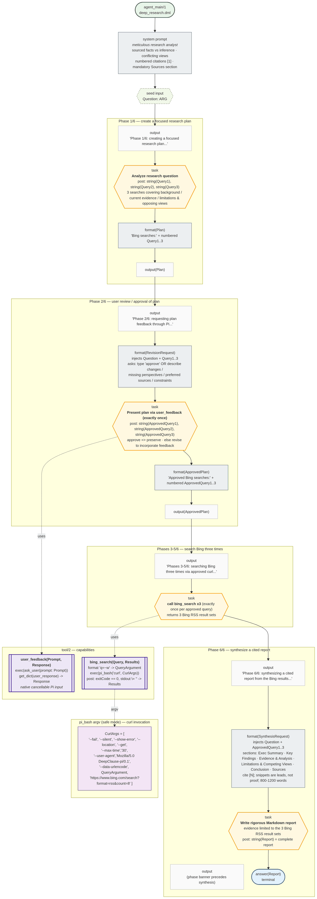
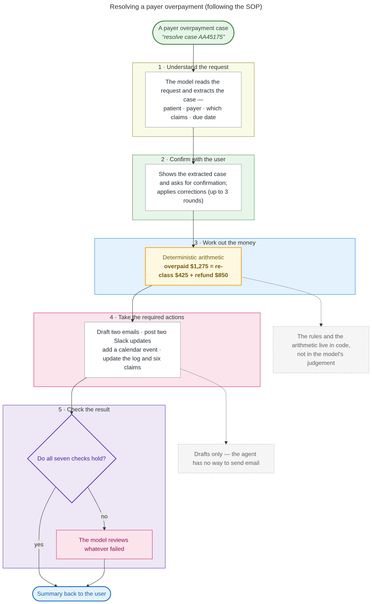
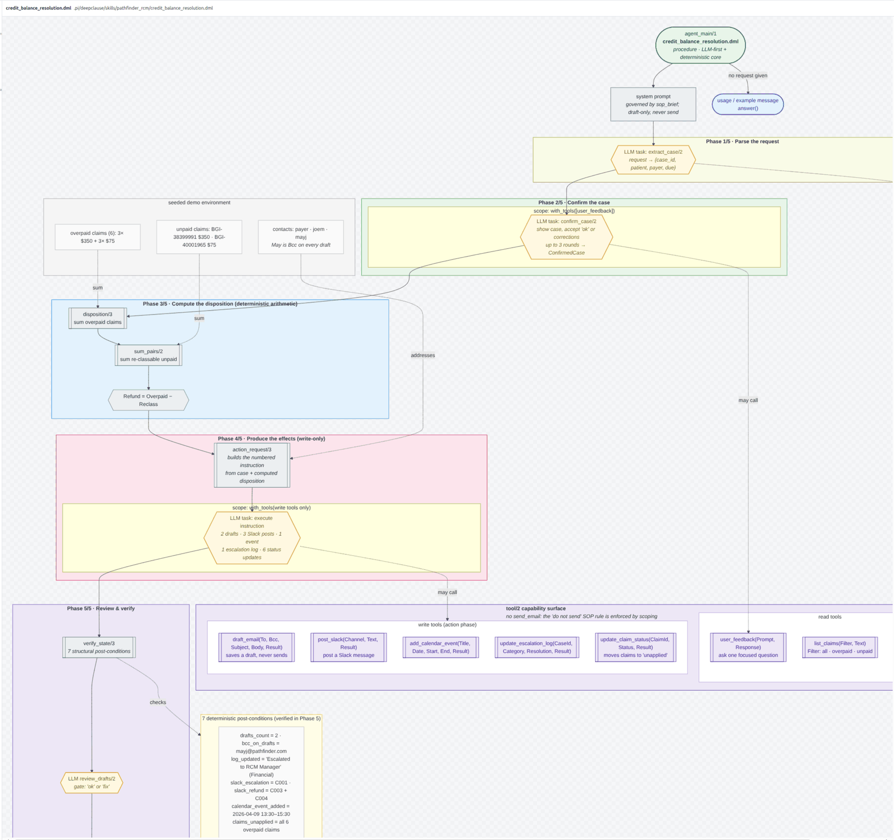

Executable specs
Specs become programs with guaranteed control flow, typed outputs, and constraints — not prose an agent may ignore.
Good old-fashioned AI for agents
DeepClause turns specs and SOPs into executable logic programs. Deterministic rules handle what must never go wrong; scoped LLM steps handle the rest.
What it is
Specs become programs with guaranteed control flow, typed outputs, and constraints — not prose an agent may ignore.
One auditable policy per workflow: deterministic rules, scoped LLM steps, verified post-conditions.
Runs on local models, inside a WebAssembly logic core and a portable sandbox.
Spec-driven development
Most specs are still prose in a context window, where a requirement can be ignored and a fallback can be hallucinated. DeepClause lowers them to a compact logic language with real control flow.
.dml is the plan — diff it, test it, ship it.
SOP2Agent
Long SOPs are where agents fail, and where compliance matters most. DeepClause turns an SOP into one auditable policy per workflow.
Amounts, thresholds, and deadlines are computed as rules — never judged by the model.
Reading and drafting run as scoped LLM loops with only the allowed tools.
The program re-reads the result and reports PASS/FAIL against post-conditions.


Built for regulated work
When an agent moves money or touches regulated data, “the model said so” is not an answer.
Every step is recorded; --trace writes a run record for review.
Policies live in version control and go through code review.
Tools are scoped per phase. Prohibited actions have no capability.
Local or on-prem models; network egress off by default.
Monetary and eligibility logic produces the same result every run.
Generated diagrams show reviewers the policy and its limits.
Local-first and secure
Built to raise small and local models, not to assume a frontier API.
Point DeepClause at Ollama, vLLM, LM Studio, or any OpenAI-compatible server.
A WebAssembly logic core, an AgentVM shell sandbox, and bwrap/seatbelt host isolation.
Static taint analysis flags untrusted data reaching prompts, tools, or memory.
On DeepPlanning travel planning, DeepClause lifted a 35B local model from 22.2% to 42.9% composite and from 82.5% to 98.3% task delivery.
Get started
Author and run policies in your coding session, or embed DeepClause in your own service.
pi install \
git:github.com/deepclause/deepclause-piAsk pi to turn your SOP into DML, then run it with /dc-run. Uses pi's model and credentials.
import { createDeepClause } from "deepclause-sdk";
const dc = await createDeepClause({
model: "host-active-model",
llmBackend, // your model
});Bring your own model backend; no provider keys required when the host supplies the LLM.
npm install -g deepclause-sdk
deepclause compile spec.md --analyze
deepclause run skill.dml --sandboxHeadless execution for CI and scripts, with static analysis built in.